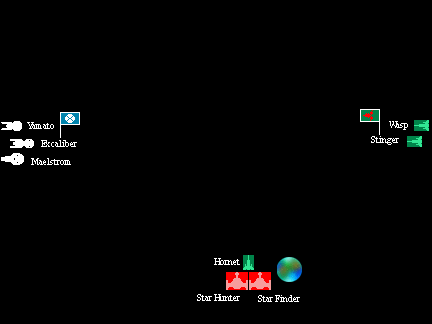

Battle Report
This battle pitted some Federation commanders who thought ahead, against some Klingon and Romulan commanders who didn't.

Klingons & Romulans. The Klingons divided their force. Two destroyers started centered on their edge of the battle area (to "swoop" down on the Federation was the later explanation). The other destroyer and the two Romulan cruisers were together (in the same hex) just on the Federation side of the planet.
The Klingon plan was to let the Federation fly into the center of the ambush, then to surround them and hit them where they didn't have shields.
Federation. The Star Fleet commander held a conference with his cruiser captains to see if either a better plan than he did. They didn't. The commander had decided as to how he expected the Klingons to plan the fight, and how he would disrupt that plan.
According to the Federation commander; "The enemy will place his cloaked ships 'south' of the planet. They will expect us to fly past the planet looking for cloaked ships somewhere beyond the planet. They will encircle us, and attack." What a genius I ... that is ... he ... was! He called the enemy's plan perfectly.
The counter plan was simple. They would move up the center of the battle area slowly, scanning ahead for cloaked ships, and always careful to keep the area around the planet in their forward sensors. Then, just before they were abreast of the planet, they would turn hard to starboard and race straight for the area the enemy was expected to occupy. If this worked, it would disrupt the enemy's trap and allow the Star Fleet force to engage a portion of the enemy force.
The Beginning. The Federation advanced as planned. The presence of five enemy ships was confirmed when two sips locked on to the Excaliber and three locked on to the Maelstrom. As the Maelstrom was on the right of the formation, the Federation commander also felt that this lock-on pattern tended to confirm that the enemy was arrayed to his formation's right side.
Just as the Star Fleet ships reached their planned turn point, the Yamato obtained a solid lock on the Wasp, ahead of her. She requested and received permission to engage that target. The Excaliber and Maelstrom then turned. At this point the battle became, effectively, two separate engagements.
The Yamato. Seeing that it was targeted, the Wasp dropped its cloak and applied power to its shields and weapons. The Stinger, in company, did the same. In a quick exchange, all three ships emptied their forward weaponry into each other. The Wasp was heavily damaged, and the Yamato received moderate damage.
The Wasp turned away, to try to gain time to perform repairs while everyone's weapons recycled. The Stinger continued past the Yamato to deliver a classic Klingon "passing attack". It worked. Unfortunately, for the Stinger, the Yamato shifted its weapon's lock to the Stinger and in the following exchange, the aft photon torpedo of the Yamato proved to be much more powerful than that of the Stinger. [It was noted at the time that the Klingon player had performed exactly the same maneuver in the previous battle against an Enterprice Mk I class cruiser. He failed to notice that his current "victim" was a Mk III, which had an aft firing torpedo launcher.]
The single torpedo hit on the Stinger proved to be very serious, coming in from its unshielded rear. With its targeting sensors off-line, and heavy damage to its warp engine, it had barely enough power to both energize its cloaking device and move at a minimum speed (2). Seeing the Wasp effectively out of the fight, the Stinger's commander decided that discretion was the better part of valor, and began to withdraw from the fight.
A few moments later the Yamato finished off the Wasp without receiving any additional damage. Although she turned to help the other Federation ships, the Yamato's part in the battle was over.
The Excaliber and Maelstrom. After turning, both ships scanned the area ahead. At a short range, both achieved a lock on a cloaked target. And both locks were on the Hornet. The Maelstrom fired all of her weapons at the cloaked target. The Excaliber expended half of her armament. The Hornet exploded without ever moving or firing. As the Hornet was in close proximity to the Romulan cruisers, both took heavy damage from the warp engine explosion.
The Excaliber was again lucky, and got another lock on a cloaked ship. Using the remainder of its armament, it smashed the Star Finder. That unlucky cruiser immediately exploded, destroying its sister ship. The only damage taken by the Excaliber was from the explosion of the Star Finder.
From beginning to end, ship's time, the battle had lasted two minutes.
| Star Fleet | Excaliber | Minor damage | ||
| Yamato | Moderate damage | |||
| Maelstrom | No damage | |||
| Klingon Empire | Stinger | Heavy damage | ||
| Wasp | Destroyed | |||
| Hornet | Exploded | |||
| Romulan Empire | Star Hunter | Destroyed | ||
| Star Finder | Exploded |
There has never been an adequate explanation of why the Romulan cruisers and the Klingon destroyer just sat still and took the attack of a Federation battleship and a missile cruiser. Surely no one thinks a destroyer can ride out that kind of damage; even when noting that it is harder to hit a cloaked ship? There is also the question of why the Romulan cruisers did not even make an effort to strike back after the loss of the companion destroyer.
Overall, the battle was won by good Federation planning, an astute judgement of the enemy's intentions, the execution of the plan, and a willingness to modify the plan when an opportunity presented itself.
[After the battle the two Romulan commanders declared that; "The battle wasn't fair, we never had a chance." To address this situation another battle was scheduled for a week later. That was known as the Second Engagement At H't Bui Bet.]